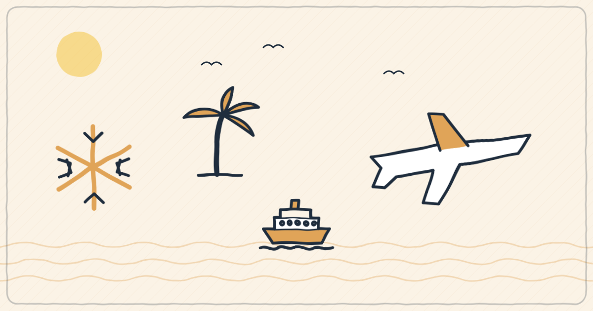

Montreal to a Caribbean Cruise: Easiest Florida Port
Fort Lauderdale is the easiest Caribbean cruise port from Montreal: nonstops on Air Canada, Porter and, in winter, Air Transat, a compact airport and a 10–15 minute ride to Port Everglades. Miami is a close second with more ships. Port Canaveral works but adds a 45–60 minute drive from Orlando. Whichever you choose, fly in the day before.

For a Caribbean cruise from Montreal, Fort Lauderdale is the port to aim for: three airlines fly nonstop in winter, the airport is small and Port Everglades is ten minutes away. Miami runs it close and has more ships to choose from; Port Canaveral is fine if your ship is there, with a longer transfer from Orlando. The port matters less than the date you fly, because Montreal winters delay planes.
Which Florida cruise port is easiest to reach from Montreal?
| Port | Airport | Nonstop from YUL | Airport to ship | Verdict |
|---|---|---|---|---|
| Port Everglades (Fort Lauderdale) | FLL | Air Canada, Porter; Air Transat in winter | 10–15 minutes | Easiest overall |
| PortMiami | MIA, or FLL | Air Canada to MIA | 20–30 minutes from MIA; 45–60 from FLL | Most ships and itineraries |
| Port Canaveral | MCO (Orlando) | Air Canada | 45–60 minutes | Disney and the biggest Royal Caribbean and Carnival ships |
| Port Tampa Bay | TPA | Mostly one-stop from Montreal | 15–20 minutes | Western Caribbean, fewer ships |
Nonstop service changes by season and by year. The airlines above were flying or had announced the routes for winter 2026-27 at the time of writing; confirm for your dates before booking the cruise.
Who flies nonstop from Montreal to Florida in winter?
Air Canada is the year-round constant, with nonstops from Montréal-Trudeau to Fort Lauderdale, Miami and Orlando. Porter flies Montreal–Fort Lauderdale with its jet fleet. Air Transat dropped its Florida flying for summer 2026 and brings Fort Lauderdale back for winter 2026-27, with up to seven weekly flights from Montreal starting in mid-November, plus three a week from Quebec City.
That gives Fort Lauderdale the deepest schedule from Quebec, which is why it wins, and Ontario cruisers have even more choice on the Toronto to Fort Lauderdale route. Miami and Orlando have nonstops, but fewer of them, so a cancelled flight has fewer same-day backups.
Fares swing hard with the calendar. Outside Christmas, New Year and the first two weeks of March, Air Canada was advertising Montreal–Miami one-ways from a little over C$200 at the time of writing; across the holidays and March break, expect to pay a good deal more each way, and book months out. Flying Toronto to Miami for a cruise covers the same decisions from Ontario.
How far is each airport from its cruise terminal?
Fort Lauderdale
Port Everglades is practically on the airport grounds. A taxi or rideshare is a flat few minutes along US-1 and costs US$15–25 at recent prices. Most hotels on 17th Street run cruise-morning shuttles.
Miami
PortMiami sits downtown, about 13 kilometres from MIA. Count 20 to 30 minutes in a cab, longer on a Saturday morning when several ships turn around at once. Rideshare runs about US$25–40.
Port Canaveral
Orlando's airport is 70-odd kilometres inland. Shuttles charge roughly US$30–45 a person each way at recent prices; a private car for four is often better value. Royal Caribbean, Carnival and Disney all sell their own coach transfers from MCO.
Tampa
The terminal is a short drive from the airport, but nonstops from Montreal are thin or seasonal, so most Quebecers connect to get there.
Should Montrealers fly to Florida the day before a cruise?
Yes, and in January and February consider two days. Freezing rain, snow and de-icing queues are routine at Trudeau from December to March, which is why where to cruise in January from Canada spends as long on the flight as on the ship. A ship closes boarding roughly 60 to 90 minutes before departure and does not wait for a late flight.
The day-before plan is simple: an afternoon flight, a hotel near the port, a slow breakfast, then arrive at the terminal in the late morning. If you wake up ill that morning, what to do when you get sick the day before a cruise is worth reading before you leave home.
Where should you sleep the night before in Fort Lauderdale or Miami?
In Fort Lauderdale, the hotels along 17th Street Causeway sit between the airport and the port; most run a cruise shuttle and several let you watch the ships from the pool deck. In Miami, downtown and Brickell hotels are a ten-minute cab from PortMiami, and the airport-area hotels are cheaper but add a half-hour ride on sailing morning. Expect US$150–250 for a decent room in winter at recent prices, more over Christmas and March break, and book it when you book the flight; port hotels sell out on busy turnaround weekends.
Is Plattsburgh or Burlington cheaper for Quebec cruisers?
Plattsburgh airport is about an hour south of Montreal and markets itself as Montreal's US airport, with low-cost flights to Florida. Burlington is a little further. The headline fare can be well below a Trudeau departure, but add it all up:
- the border crossing both ways, which can be slow on a Friday afternoon
- parking for the length of the cruise
- a thin schedule: one or two flights a day, so a cancellation means a long wait
- US domestic baggage fees on the cheapest fares
- no US pre-clearance, so you clear customs on landing in Florida, not before leaving
For a family of four with a car, the saving can be real. For a couple, the Trudeau nonstop usually wins once the parking and the risk are counted.
What does FICAV protect for Quebec travellers?
Quebec residents have something no other province offers. The Fonds d'indemnisation des clients des agents de voyages, run by the Office de la protection du consommateur, protects travellers who book through a travel agency holding a Quebec licence, including online agencies with the licence. It costs the consumer nothing: a contribution line appears on the invoice and is credited back.
The Fund can reimburse services you paid for and did not receive: a cruise line or airline hit by a strike, bankruptcy, closure or storm; a cancelled cruise package; an agency that closes before you depart; or a Canadian government advisory issued on departure day telling you not to travel. It also covers meals and accommodation while you are stranded, up to a daily cap (C$252 a person a day from July 2026, indexed each year).
For everything else that can go wrong, cruise insurance for Canadians explains what a policy should include.
Miami sailing or Fort Lauderdale sailing: how do you choose?
If your line runs the same week-long itinerary from both ports, take Fort Lauderdale for the shorter ride and the richer flight schedule. If the ship you want only leaves Miami, book it and still consider flying into Fort Lauderdale: the 45-minute drive down I-95 is no hardship the day before, and the fare or timing from Montreal is sometimes better.
Either way you need a valid passport. Canadians do not need an ESTA or a visa for a cruise from a US port, and the document rules for Canadians sailing from the US list the exceptions.
Want this checked for your own sailing? A licensed cruise consultant can price it up and answer questions for free, with no obligation.
Ask a cruise expert →The Montreal plan in one paragraph
Pick the ship first. If it sails from Fort Lauderdale, book a nonstop on Air Canada, Porter or Air Transat for the afternoon before, sleep on 17th Street and walk or shuttle to the pier. If it sails from Miami, fly into whichever of FLL or MIA has the better nonstop that day. Leave Orlando's longer transfer for the ships that only sail from Port Canaveral, and never fly on sailing day in a Montreal winter.
Questions people also ask
Which Florida cruise port is closest to the airport?
Fort Lauderdale. Port Everglades sits beside FLL airport and the ride is usually 10 to 15 minutes. Tampa is next at about 15 to 20 minutes, then Miami at 20 to 30 minutes from MIA. Port Canaveral is 45 to 60 minutes from Orlando airport.
Are there nonstop flights from Montreal to Fort Lauderdale?
Yes. Air Canada and Porter fly Montreal–Fort Lauderdale, and Air Transat returns to the route for winter 2026-27 with up to seven flights a week from mid-November. Schedules thin out outside winter, so check your dates.
Can I fly into Fort Lauderdale for a cruise leaving Miami?
Yes, and many Quebec cruisers do when the fare or the timing is better. The two airports are about 45 kilometres apart; a taxi or rideshare from FLL to PortMiami takes 45 to 60 minutes in normal traffic. Fly in the day before and the extra distance is no problem.